~14 Creating the Different Rooms ~
4/13/2026
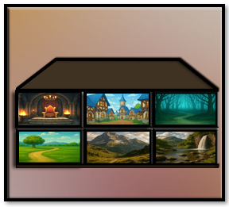
For this next part of the tutorial, you will want to collect different background images, and throw them into a folder in your GameMaker Folder. In the image below, you can see that we have a few extra images that we can add later, but for now we will be working with just 6 backgrounds.
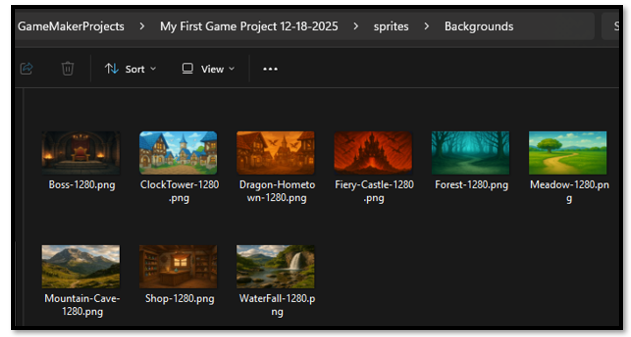Well, I suppose you could just have your hero going through the maze in the dungeon forever, but it would be more exciting that when our hero does reach a specific door in the dungeon, that he could be transported to any number of areas in the game, and not simply trapped int the dungeon with no door out.
Take your images into Photoshop and make sure they fit your room dimensions (1280 X 704).
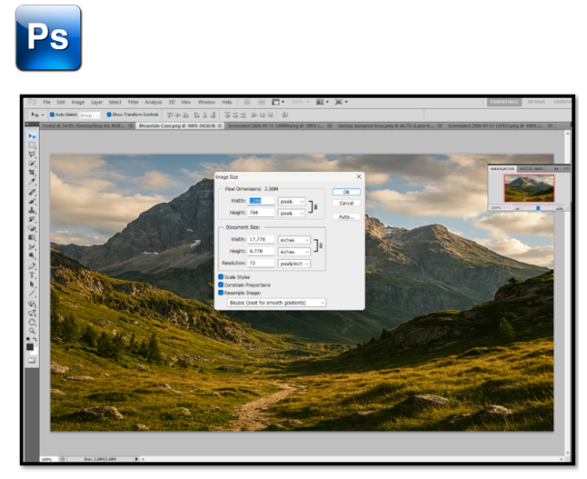
Step-by-step: Using a background sprite in a room
1. Create a Sprite from Your Background Image
• In the Asset Browser, right-click the Sprites folder.
• Choose Create Sprite.
• Name it something like:
spr_background_town
spr_background_cave
spr_background_forest
spr_background_waterfall
spr_background_boss
spr_background_shop
Click Import and select your image from the sprites_Background folder. Set the sprite size to match your room dimensions (1280 X 704).
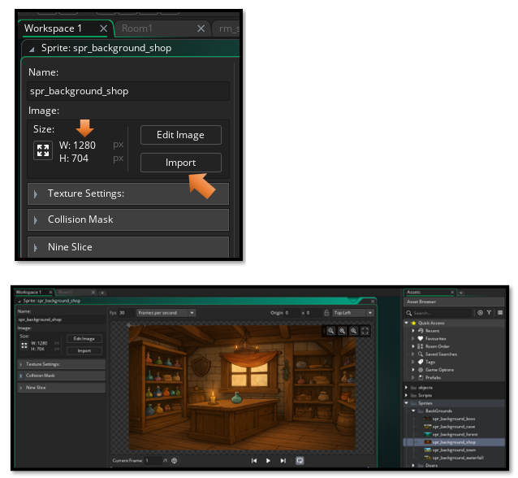
We will not need to create any objects from these sprites, since backgrounds do not need code, and only use images, we can stop after creating the sprites.
2. Create these rooms in Game Maker:
rm_town
rm_cave
rm_forest
rm_waterfall
rm_boss
rm_shop
We can right click inside of the Asset Browser, and create a new group. Name it Rooms, and place all of the rooms inside of it. Don’t worry about the code not working after the move, the code will work just fine.
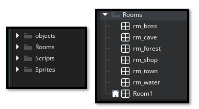
After creating the sprite, go to the Rooms tab.
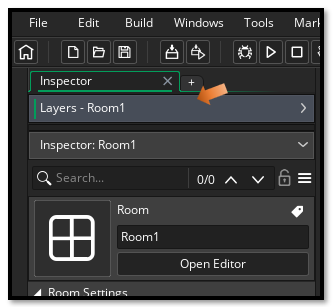If you do not see your Layers, on the left hand side after switching to the Rooms tab, Just click at the top of the Inspector panel and double-click on the Layers tab to open it.
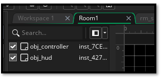Then click on the Background Layer to make sure it is selected.
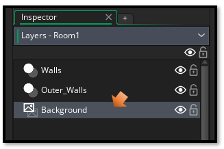
3. Place on Background Layer
- Make sure it is on the Background layer
Note, it will try and constantly go back to Instances Layer, if you do not see an option for Sprites in the Editor, make sure you are on the correct layer.
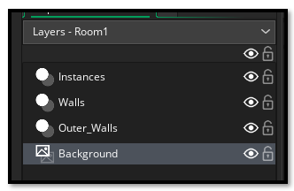4. In the properties on the left, you'll see:
- Visible ✓ (CHECK THIS - you want it visible!)
- Sprite: (click here to choose a background image, you will only see this Sprite option in the background layer)
6. Choose your background sprite from the sprite list
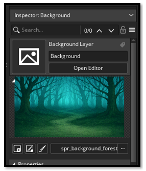
Make sure the Size of the room is 1280 x 704 to match your background image. If it is not, change it.
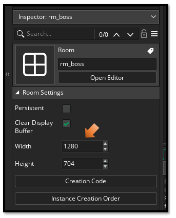
Testing a New Door
Ok, in order to test out each of our doors, we will need to add that door to the maze. Because right now the only door that the auto maze system is generating is the regular progression door. We will be testing the town door first. So, drag that door into Room1, which is the default room.
Note, Make sure you are on the Instance Layer to drag your door onto. Objects do not work on the Background layer and should not be there.
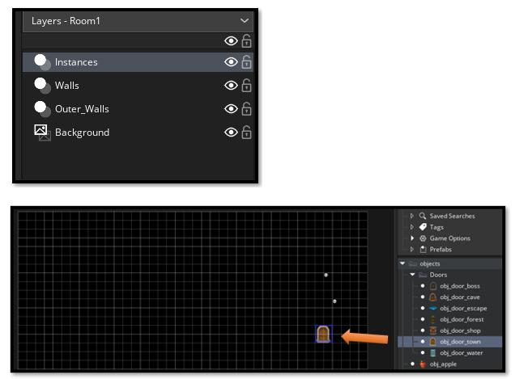
Write the Town Code in the Hero Collision Event
Open Object hero
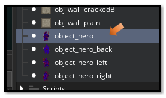Ok this collision step, is down a bit of a rabbit hole on this Event Creation panel.
- Add Event → Collision → obj_door_town
2. Add this code (using room_restart for testing):
// Collision Event with obj_door_town
show_debug_message("Hero touched Town Door!");
// Now when hero hits door it should go to the town
room_goto(rm_town);
Save and test your game
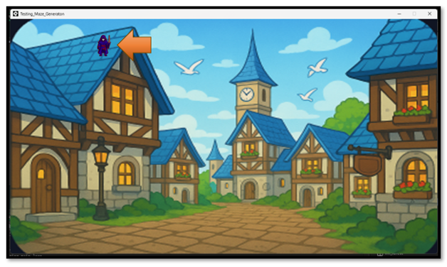
Getting the hero out of the Sky
Ok, well when we run the game it works, but he shows up where the door was at in the dungeon, and that places the hero, up in the sky, and on the roof. Probably not what we want
Room Start Event - Object Hero
Add a Room Start Event to object_hero:
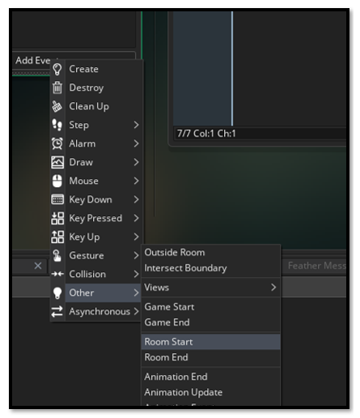In object_hero, Add Event → Other → Room Start
Replace the code that you have in Room Start right now with this code. This is because in the self generating maze the hero needs to remember where he was, but in other areas, the hero needs to end up at the bottom center of the playing field. This code will additionally grow the hero a bit by scaling him up a bit, so he does not appear so puny, and in the land of giants, when he shows up in our massively expansive scenic areas.
// Room Start Event
// Check if we're in the dungeon (Room1)
if (room == Room1) {
// Dungeon room - use maze generation spawn point
if (variable_global_exists("hero_spawn_x")) {
x = global.hero_spawn_x;
y = global.hero_spawn_y;
}
// Keep normal size in dungeon
image_xscale = 1;
image_yscale = 1;
}
else {
// All other rooms - spawn at bottom center
x = room_width / 2; // Center horizontally
y = room_height - 150; // Near bottom (adjust this number if needed)
// Scale up the hero for town/other rooms
image_xscale = 2; // Make hero 2x bigger
image_yscale = 2;
}
Collision Events
Now we have the collision event completed, when the hero hits the town door. So, our next steps will be to create separate collision events inside of the hero, that will deal with the other doors.
We can actually figure this out just by reviewing the way we created the code in the hero for the collision with the door.
So, after completing all of those steps, I think I will end this section of the tutorial here. Next we will be working on adding a bit of animation to each door. Since our regular dungeon door is quite flashy with its plulsing yellow light. But it tends to make our other doors look just a bit dull.